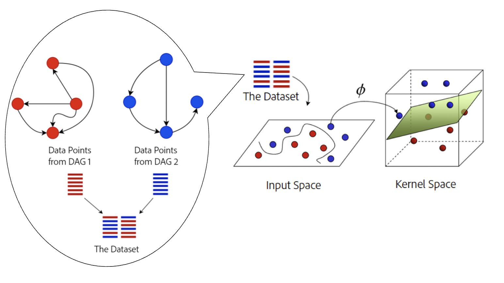
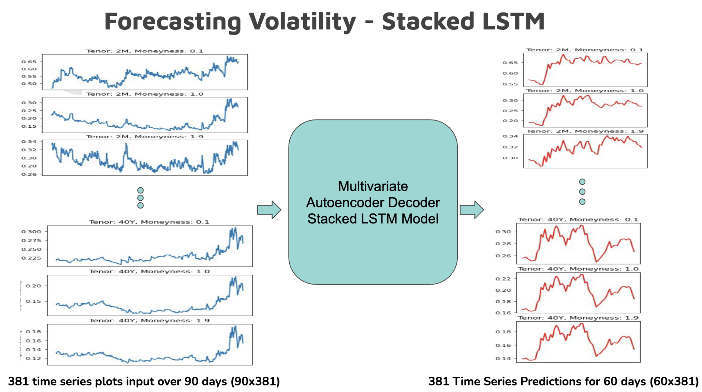

About Me
I am an incoming masters student at Stanford University. I have a dual degree in Mechanical Engineering and Data Science from IIT Madras, India.
I am a Robotics and Artificial Intelligence Enthusiast with diverse industrial and research experiences. I was a Machine Learning Research Intern at Adobe Research in the summer of 2023 during which we developed a patent and successfully filed it in the USPTO (United States Patent and Trademark Office). I spent my Fall 2022 as an semester exchange student at KTH Royal Institute of Technology, Sweden. I have also worked as a summer research intern at Hokkaido University, Japan. My specific areas of interests include Reinforcement Learning, Robotic Vision and Safe Autonomous Systems.
Click Here to view my CVSept 2024
MS at Stanford UniversityDec 2021 - Jan 2022
Data Analysis Intern, Detect TechnologiesMay 2021 - Jun 2021
ML Intern, Digital OutcomesJul 2019
Admitted to IIT MadrasResearch Experiences
Improving Spatial Awareness of an Intelligent Prosthetic Arm using VLMs
Stanford University, California
As an MS researcher at ARMLab, Stanford University. I am working on a project that aims to process video feeds from multiple cost-effective cameras to detect objects of interests (using vision language models - VLMs) and ensure safety of the arm.

Human in the Loop, Safe Reinforcement Learning
Indian Institute of Technology, Madras
As a part of my dual degree thesis, I developed a human-in-the-loop safe reinforcement learning framework that ensures safety in both training and deployment.
The approach involves two steps: the first step is the utilization of expert human input to establish a Safe State Space (SSS) and a corresponding Conservative Safe Policy (CSP). In the second step, we used a modified version of the Deep Deterministic Policy Gradient algorithm which we called SafeDDPG augmented with a safety layer (built using SSS and CSP) that is learned by the agent during the training.
SafeDDPG results on two Safe RL Benchmark Environments. In the Pendulum environment, safety is defined as staying within 20 degrees. In the SafetyPointCircle environment, the bot earns high rewards for moving along the circle but must stay within the yellow walls.
Causal Artificial Intelligence | Patent*
Adobe Research, Bengaluru
With counterparts from other IITs (Indian Institute of Technology), I worked on a group project in the field of Causal Artificial Intelligence. We built a novel deep learning-based causal inference algorithm designed to cluster markets.
*We developed a patent from our work which was successfully filed at the US Patent and Trademark Office (USPTO), receiving a grant of $7,200.

Clustering Users by learning the underlying Causal Relationships
Reactive Obstacle Avoidance using Depth Images and CBFs
Royal Institute of Technology, Sweden
In this work, we constructed a low level obstacle avoidance controller that does not rely on global localisation or pre-existing maps
while providing provable guarantees to safety in an unknown and uncertain environment.
I built a fully functioning pipeline in ROS that generates the safe sets from the depth images and a control barrier function (CBF) based controller
that uses these safe sets to generate the velocity commands.
The turtlebot navigates using the CBF based control outputs
Deep RL in Autonomous Cars
Hokkaido University, Japan
I worked on applying deep reinforcement learning in autonomous cars to optimize traffic flow in scenarios like signal intersections and highway merges.
I explored various state space encodings for traffic representation and implemented extensions to deep Q learning,
such as double Q learning, prioritized replay, dueling networks, and noisy nets.
Having conducted a thorough empirical analysis,
I showed that RL-based autonomous cars can reduce congestion time significantly compared to rule-based agents by 30%.
Traffic Flow Optimisation in the presence of an obstacle on on the road (Car 1 is an RL agent while the other cars are rule based and simulated)
Key Projects
Drone Swarm Challenge
Inter-IIT Tech Meet 2023, IIT Kanpur
We transformed an existing ROS-based architecture into a platform-independent and user-friendly Python API to control the drones and perform swarming. Having designed a post-flight analytics dashboard to assess and tune the algorithm using React.js and Plotly, we achieved stable hovering and vision-guided rectangular motion of drones by implementing a multi-axis PID controller.
Stable hovering with a multi-axis PID Controller
RL Games Hackathon
National Champions, Shaastra 2022
We created bots using reinforcement learning to compete with other bots in a virtual two-player 2D game setting. With a novel feature engineering technique inspired by the decision tree algorithm, we implemented two Deep RL algorithms namely DQN and Policy Gradient based. In the video, our agent is A (the blue snake) vs and opponent in the tournament.
Our RL agent (A - Blue) vs Opponent agent (B - Red)
Mission Planner for Autonomous Robots
Course Project, Introduction to Robotics, KTH
In this project, I implemented a mission planner on the TIAGo Robot using behaviour trees that achieves autonomous navigation and manipulation based on high level instructions like "Go to Table A, grab the cube and place it on Table B".
For the low level tasks, I implemented an Inverse Kinematics solution for the robotic arm using its Denavit-Hartenberg parameterization, Particle Swarm Optimisation for pose estimation and RRT* for navigation.
The Tiago robot autonomously performs a Pick and Place task
Flipkart Grid Robotics Challenge
We implemented a central monitoring/navigation system aimed to control robots in a warehouse. Using OpenCV to understand the arena and estimate the position and orientation of the robot, we developed a central navigation system to instruct the robot on go to the desired location and drop the packages.
A CV based centralised controller generating waypoints and velocity commands to the bot
Wells Fargo Quantitative AI Hackathon
3rd Place, Shaastra 2022
Secured 3rd place out of 500+ teams registered across the country in the national-level quantitative AI hackathon in which we forecasted the implied volatility surface of options over 60 trading days using 2.5 years of past volatility surface data.

Network architecture used for predicting the volatility surface

Social Impact
UpSkill
Social Initiative, Shaastra 2021
UpSkill was an initiative which aimed to improve CS Education in middle schools level by equipping teachers with new methodologies and introduce a curriculum based on block-based programming. As a student coordinator, I worked with the team in ideating, planning and executing all the activities and events we held as a part of this initiative. Carried out during the COVID lockdown, the social endeavor was a huge success, impacting over 7000 school teachers across India through online lecture series and workshops.
Click to view the Panel Discussion